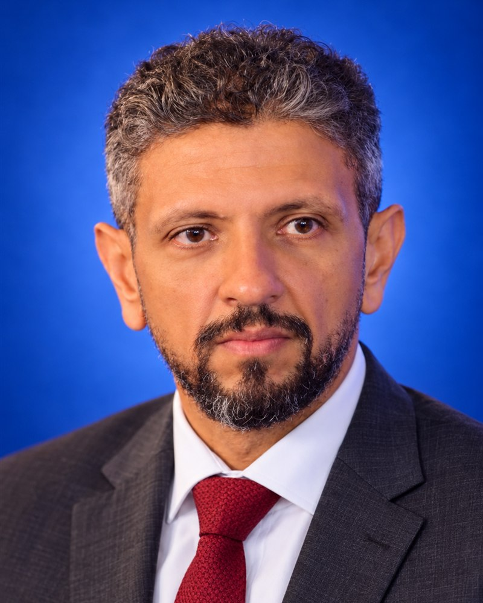

Water economics
Tariffs, cost recovery and the payment line. I follow the money from the service a household or farm receives to the debt a lender expects back.
 Water · Energy · Food · Ecosystems
Water · Energy · Food · Ecosystems
I work on water economics, policy dialogue, strategic analysis and programme management. The question is always the same: who decides, who pays, and what moves the project one stage closer to finance?

Translating the WEFE Nexus for lenders: water to repayment, energy to risk, food to revenue, ecosystems to guarantee.
Infrastructure finance
Four credit questions every WEFE project has to answer before a bank will lend.
Water economics
What moved, what stayed hard, and what the region can carry to the UN Water Conference.
Policy dialogueTariffs, cost recovery and the payment line. I follow the money from the service a household or farm receives to the debt a lender expects back.

Conversations designed to end in a decision: a clear question, the people who can answer it, and a written next step with a name and a date.

Short, sourced reads on what a new report, rating or declaration changes for your project, your portfolio or your next negotiation.

From concept to delivery: stage gates, risk registers and reporting a board can act on, so a priority becomes a project with a budget line.
Every project touches all four systems. Before any meeting on financing, I ask one question per system and bring the answers to the decision in the middle.
Which service or resource constraint?
What demand, and who pays?
Which users or production needs?
Which flows, quality or habitats?

I prepare, convene and write up dialogues between ministries, utilities, lenders and project teams.
A small table, one question, and a written next step that names who acts and by when.
Bankers and operators test a project against the credit questions before it reaches committee.
Two pages before the meeting: what is at stake, the options on the table, and the ask.

I write The WEFE Nexus Translator, a newsletter that turns water, energy, food and ecosystem questions into the language lenders, ministries and project teams use to decide.
My work sits where water and social infrastructure meet finance. I translate between the engineers who design a project, the officials who own it and the bankers who have to say yes.
Everything here is independent analysis in my own name.
Peer-reviewed work on non-revenue water, pipeline network design and integrated water resources management, from my doctoral research in irrigation engineering and hydraulics.

Tell me where it stands and what decision comes next. I'll tell you which questions to answer first.